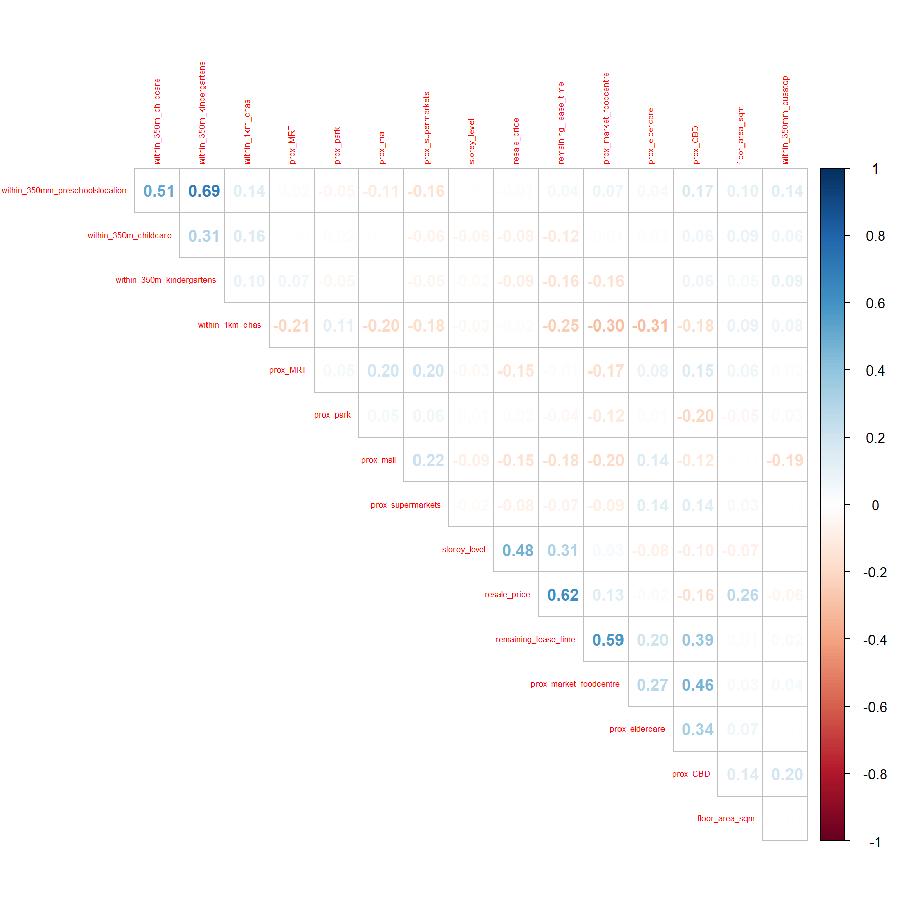
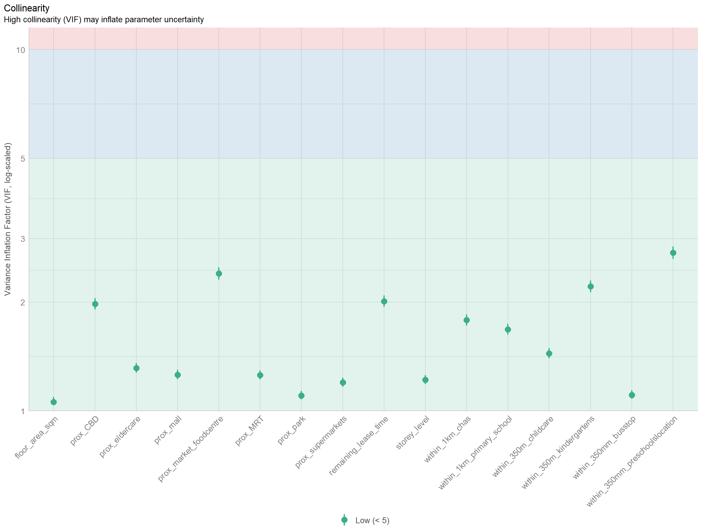
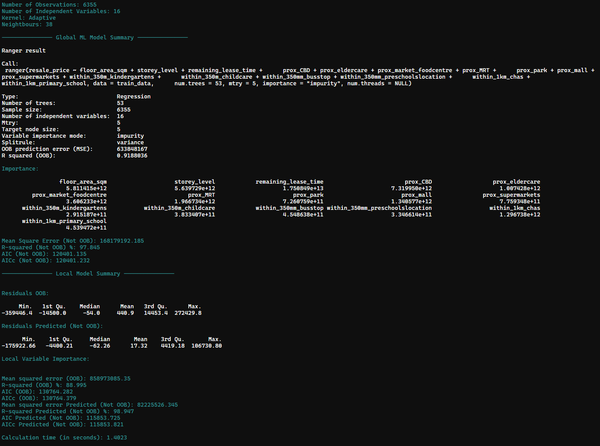
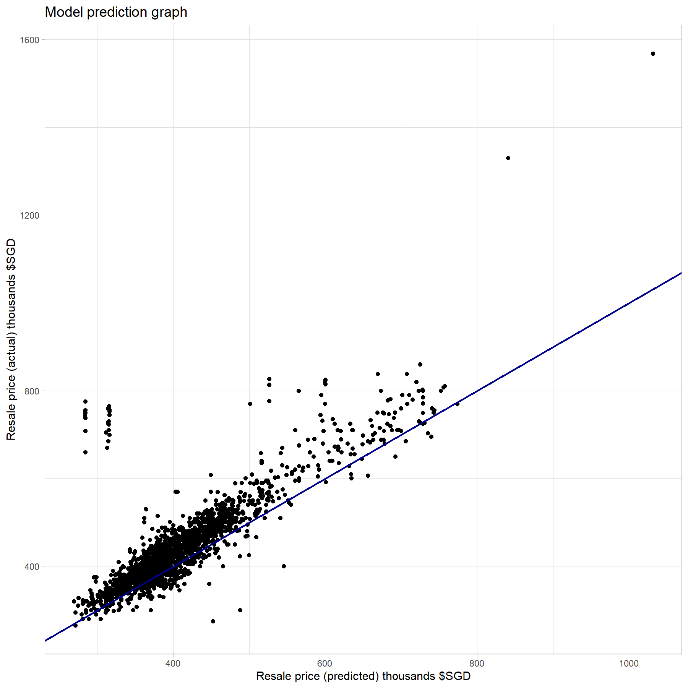

pacman::p_load(tidyverse, sf, httr, jsonlite, tmap, SpatialAcc,
spdep, GWmodel, SpatialML, rsample, Metrics, kableExtra,
knitr, ggstatsplot, spatstat, see, performance)Project 3
1. Objectives and Tasks and packages used
In this project, I planned to calibrate a predictive model to predict HDB resale prices between July-September 2024 by using HDB resale transaction records in 2023. For the purpose of this take-home exercise, HDB Resale Flat Prices provided by Data.gov.sg should be used as the core data set. The study should focus on either three-room, four-room or five-room flat.
https://isss626-ay2024-25aug.netlify.app/take-home_ex03b
The below packages are used and loaded in using the p_load() function of pacman package
2. The data
Below is a list of predictors and data used in this study
Structural factors all of this are locate within the Resale flat prices based on registration date from Jan-2017 onwards under the resale.csv file - Area of the unit - Floor level - Remaining lease
Locational factors
- Proxomity to CBDs based on the Master Plan 2014 Subzone Boundary (Web)
- Proximity to eldercares from Eldercare Services (SHP) data.gov.sg
- Proximity to market/food centres is based on NEA Market and Food Centre from data.gov.sg
- Proximity to MRTs or MRTs exit points are based on LTA MRT Station Exit (GEOJSON) from data.gov.sg
- Proximity to parks based on the Parks from NPARKS (National Parks Board) from data.gov.sg
- Proximity to shopping malls this is based on a list of shopping malls namaes extracted from Wikipedia
- Proximity to supermarkets based on the Supermarkets (KML) from SFA (Singapore Food Agency) from data.gov.sg
- Numbers of kindergartens within 350m from the Kindergartens data from ECDA (Early Childhood Development Agency) from data.gov.sg
- Numbers of childcare centres within 350m probabably based on the Child Care Services from data.gov.sg, but the actual data was from Chapter 4
- Numbers of bus stops within 350m data is based on the Bus Stops data from LTA datamall
- Numbers of preschools within 350m based on Pre-Schools Location data from ECDA (Early Childhood Development Agency) from data.gov.sg
- Numbers of CHAS within 1km based on the CHAS Clinics data from MOH (Ministry of Health) from data.gov.sg
- Numbers of primary schools within 1km The data of schools is gotten from the data.gov.sg website that has a list of all schools and their addresses
3. Data prepratation and wrangling
3.1 First phase of data preparation and wrangling
Resale data
First the resale data will be loaded into data call resale using the read_cvs()
resale <- read_csv("data/non-geo/resale.csv") %>%
filter(month >= "2023-01" & month <= "2024-09")head(resale)# A tibble: 6 × 11
month town flat_type block street_name storey_range floor_area_sqm flat_model
<chr> <chr> <chr> <chr> <chr> <chr> <dbl> <chr>
1 2023… ANG … 2 ROOM 406 ANG MO KIO… 01 TO 03 44 Improved
2 2023… ANG … 2 ROOM 323 ANG MO KIO… 04 TO 06 49 Improved
3 2023… ANG … 2 ROOM 314 ANG MO KIO… 04 TO 06 44 Improved
4 2023… ANG … 2 ROOM 314 ANG MO KIO… 07 TO 09 44 Improved
5 2023… ANG … 2 ROOM 170 ANG MO KIO… 01 TO 03 45 Improved
6 2023… ANG … 3 ROOM 225 ANG MO KIO… 04 TO 06 67 New Gener…
# ℹ 3 more variables: lease_commence_date <dbl>, remaining_lease <chr>,
# resale_price <dbl>First look at the data we could see that there is a range of story under storey_range and remaining_lease are actully a string instead of numeric data that need to be convert to a better data for better modelling later. Other data such as floor_area_sqm and resale_price seems to be in appropriate
Quickly checking unique data for storey_range
unique(resale$storey_range) [1] "01 TO 03" "04 TO 06" "07 TO 09" "25 TO 27" "10 TO 12" "13 TO 15"
[7] "16 TO 18" "22 TO 24" "19 TO 21" "34 TO 36" "28 TO 30" "37 TO 39"
[13] "31 TO 33" "40 TO 42" "43 TO 45" "46 TO 48" "49 TO 51"There is 17 unique data which I’ll convert to numeric from 1-17 separately..
The remaining_lease would go through being separate into remaining_lease_yr column and remaining_lease_mth separated then recalculate under remaining_lease_time with function remaining_lease_yr*12 + remaining_lease_mth.
All of the above steps would be done with the code below creating resale_tidy data
resale_tidy <- resale %>%
mutate(address = paste(block,street_name)) %>%
mutate(remaining_lease_yr = as.integer(
str_sub(remaining_lease, 0, 2)))%>%
mutate(remaining_lease_mth = as.integer(
str_sub(remaining_lease, 9, 11))) %>%
mutate_if(is.numeric , replace_na, replace = 0) %>%
mutate(remaining_lease_time = remaining_lease_yr*12 + remaining_lease_mth) %>%
mutate(storey_level = case_when(
storey_range == "01 TO 03" ~ as.integer(1),
storey_range == "04 TO 06" ~ as.integer(2),
storey_range == "07 TO 09" ~ as.integer(3),
storey_range == "10 TO 12" ~ as.integer(4),
storey_range == "13 TO 15" ~ as.integer(5),
storey_range == "16 TO 18" ~ as.integer(6),
storey_range == "19 TO 21" ~ as.integer(7),
storey_range == "22 TO 24" ~ as.integer(8),
storey_range == "25 TO 27" ~ as.integer(9),
storey_range == "28 TO 30" ~ as.integer(10),
storey_range == "31 TO 33" ~ as.integer(11),
storey_range == "34 TO 36" ~ as.integer(12),
storey_range == "37 TO 39" ~ as.integer(13),
storey_range == "40 TO 42" ~ as.integer(14),
storey_range == "43 TO 45" ~ as.integer(15),
storey_range == "46 TO 48" ~ as.integer(16),
storey_range == "49 TO 51" ~ as.integer(17)))Now with the basic resale data sort, we would next need to find the geographical location of each of these units, to do this I would first need to get the list of address of these units, using the code chunk below
add_list <- sort(unique(resale_tidy$address))This function below is used to make and API call to onemap API to extract the coordinate of these units based on its address, this would later be used based on names of shopping malls as well which I will mention.
get_coords <- function(add_list){
# Create a data frame to store all retrieved coordinates
postal_coords <- data.frame()
for (i in add_list){
#print(i)
r <- GET('https://www.onemap.gov.sg/api/common/elastic/search?',
query=list(searchVal=i,
returnGeom='Y',
getAddrDetails='Y'))
data <- fromJSON(rawToChar(r$content))
found <- data$found
res <- data$results
# Create a new data frame for each address
new_row <- data.frame()
# If single result, append
if (found == 1){
postal <- res$POSTAL
lat <- res$LATITUDE
lng <- res$LONGITUDE
new_row <- data.frame(address= i,
postal = postal,
latitude = lat,
longitude = lng)
}
# If multiple results, drop NIL and append top 1
else if (found > 1){
# Remove those with NIL as postal
res_sub <- res[res$POSTAL != "NIL", ]
# Set as NA first if no Postal
if (nrow(res_sub) == 0) {
new_row <- data.frame(address= i,
postal = NA,
latitude = NA,
longitude = NA)
}
else{
top1 <- head(res_sub, n = 1)
postal <- top1$POSTAL
lat <- top1$LATITUDE
lng <- top1$LONGITUDE
new_row <- data.frame(address= i,
postal = postal,
latitude = lat,
longitude = lng)
}
}
else {
new_row <- data.frame(address= i,
postal = NA,
latitude = NA,
longitude = NA)
}
# Add the row
postal_coords <- rbind(postal_coords, new_row)
}
return(postal_coords)
}Once the function is loaded and the unit address list is created, the below code chunk is run to get all the geo coordinates of these units
coords <- get_coords(add_list)Just in case I will write these coords to a rds file for later usage.
write_rds(coords, "data/rds/coords.rds")coords <- read_rds("data/rds/coords.rds")These coordinates is then joined back to the resale_tidy
resale_tidy <- resale_tidy %>%
left_join(coords)Since the coords would appear as longitude and latitude which is not sf type and would be hard for later analysis, the code chunk below would use the st_as_sf() to convert it to a POINT geometric instead, then to make sure the crs is in correct format of 3414 I will also use st_transform(). This code chunk below would create resale_tidy_final data
resale_tidy_final <- resale_tidy %>%
st_as_sf(coords = c("longitude", "latitude"), crs = 4326) %>%
st_transform(crs = 3414)Just in case I will write this data to a rds file for later usage.
write_rds(resale_tidy_final, "data/rds/resale_tidy_final.rds")resale_tidy_final <- read_rds("data/rds/resale_tidy_final.rds")Now, since the study would be focusing on either 3 rooms, 4 rooms or 5 rooms units using 2023 data to predict July-September 2024 data. In this case I would be focusing on 3 rooms analysis and did one more wrangling to filter data to only include 2023 - Sep 2024 and for 3 room units.
The code chunk below is for this wrangling process
resale_final <- resale_tidy_final %>%
filter(flat_type == '3 ROOM') %>%
filter(month >= "2023-01" & month <= "2024-09")CBD data
CBD data is using the Master Plan 2014 Subzone Boundary (Web) which I would load and then filter out only the CBD region which includes ‘DOWNTOWN CORE’, ‘MARINA EAST’, ‘MARINA SOUTH’, ‘MUSEUM’, ‘NEWTON’, ‘ORCHARD’, ‘OUTRAM’, ‘RIVER VALLEY’, ‘ROCHOR’, ‘SINGAPORE RIVER’, ‘STRAITS VIEW’, st_transform() would also be used just in case in the code chunk below creating the CBD data
CBD <- st_read(dsn = "data/geo",
layer = "MP14_SUBZONE_WEB_PL") %>%
filter(PLN_AREA_N %in% c('DOWNTOWN CORE', 'MARINA EAST', 'MARINA SOUTH',
'MUSEUM', 'NEWTON', 'ORCHARD', 'OUTRAM',
'RIVER VALLEY', 'ROCHOR', 'SINGAPORE RIVER',
'STRAITS VIEW'))%>%
st_transform(crs = 3414)Mall list
Since the data is extracted from Wikipedia and only include the mall names, I would need to somehow get the coordinates for these malls. But first the mall list is loaded in creating mall_list
mall_list <- read_csv("data/non-geo/mall_list.csv")Similarly to the resale data I wil once again get the unique list of name instead of address this time with the code chunk below
mall_name <- sort(unique(mall_list$name))Then this name list would be feed into the get_coords() function creating a new list of coordinations that has the name of the malls and its coords as longitude and latitude which is not sf type and would be hard for later analysis, the code chunk below would use the st_as_sf() to convert it to a POINT geometric instead and st_transform() used to make sure the crs is in correct format. All of this would be done in the code chunk below
mall_list_coords <- get_coords(mall_name) %>%
st_as_sf(coords = c("longitude", "latitude"), crs = 4326) %>%
st_transform(crs = 3414)Just in case I will write this data to a rds file for later usage.
write_rds(mall_list_coords, "data/rds/mall_list_coords.rds")mall <- read_rds("data/rds/mall_list_coords.rds")Primary school list
Firstly since the data Generalinformationofschools.csv file include the list of all schools I would need to extract data to get the necessary information such as name and address. This is done using the code chunk below
school_list <- read_csv("data/non-geo/Generalinformationofschools.csv") %>%
filter(mainlevel_code == 'PRIMARY') %>%
select(1,3)Next similarly to the resale data or the mall data this address list would be feed into the get_coords() function creating a new list of coordinations as longitude and latitude which is not sf type and would be hard for later analysis, the code chunk below would use the st_as_sf() to convert it to a POINT geometric instead and st_transform() used to make sure the crs is in correct format. All of this would be done in the code chunk below
school_list_address <- sort(unique(school_list$address))
school_list_coords <- get_coords(school_list_address) %>%
st_as_sf(coords = c("longitude", "latitude"), crs = 4326) %>%
st_transform(crs = 3414)Just in case I will also write this data to a rds file for later usage.
write_rds(school_list_coords, "data/rds/school_list_coords.rds")primary_school <- read_rds("data/rds/school_list_coords.rds")MRT
Since MRT data is already in geographical points I just need to load it in using the code chunk below
MRT <- st_read(dsn = "data/geo/LTAMRTStationExitGEOJSON.geojson") %>%
st_transform(crs = 3414)Preschool location
Preschool data is already in geographical points I just need to load it in using the code chunk below
preschoolslocation <- st_read("data/geo/PreSchoolsLocation.geojson") %>%
st_transform(crs = 3414)Kindergartens
Kindergartens data is already in geographical points I just need to load it in using the code chunk below
kindergartens <- st_read(dsn = "data/geo/Kindergartens.kml") %>%
st_transform(crs = 3414)Supermarkets
Supermarkets data is already in geographical points I just need to load it in using the code chunk below
supermarkets <- st_read(dsn = "data/geo/SupermarketsKML.kml") %>%
st_transform(crs = 3414)Eldercare center
Elder care center data is already in geographical points I just need to load it in using the code chunk below
eldercare <- st_read(dsn = "data/geo",
layer = "ELDERCARE") %>%
st_transform(crs = 3414)Childcare center
Childcare center data is already in geographical points I just need to load it in using the code chunk below
childcare <- st_read(dsn = "data/geo",
layer = "CHILDCARE") %>%
st_transform(crs = 3414)Bus Stops
Bus Stops data is already in geographical points I just need to load it in using the code chunk below. However I do notice during analysis that some of the Bus stops especially ‘46239’, ‘46609’, ‘47701’, ‘46211’, ‘46219’ are located outside of Singapore hence I would remove them from this analysis
busstop <- st_read(dsn = "data/geo",
layer = "BusStop") %>%
filter(!BUS_STOP_N %in% c('46239','46609','47701','46211','46219')) %>%
st_transform(crs = 3414)CHAS clinics
CHAS clinics data is already in geographical points I just need to load it in using the code chunk below. However I do notice during analysis that one of the clinic ‘kml_271’ is somehow located outside of Singapore hence I would remove them from this analysis
CHAS <- st_read(dsn = "data/geo/CHASClinics.kml") %>%
filter(Name != 'kml_271')%>%
st_transform(crs = 3414)Market and foodcentres
Market and foodcentres data is already in geographical points I just need to load it in using the code chunk below
market_foodcentre <- st_read(dsn = "data/geo/NEAMarketandFoodCentre.geojson") %>%
st_transform(crs = 3414)Parks
Parks data is already in geographical points I just need to load it in using the code chunk below
park <- st_read(dsn = "data/geo/ParkFacilitiesGEOJSON.geojson") %>%
st_transform(crs = 3414)3.2 Second phase of data preparation and wrangling
Once all the data are loaded in I will move on to the next step of calculating the geographical proximity and the number of facilities within a radius of HDB units.
First I will create 2 buffer zone data for these unit at 1000 m or 1 km and 350 m separately. The code chunk below will be for this purpose
buffer_1km_HDB <- st_buffer(resale_final,
dist = 1000)buffer_350m_HDB <- st_buffer(resale_final,
dist = 350)Once the buffer zones are created, new columns are created for the resale_final and they each represent the number of facilities within a radius of HDB units either 350 m or 1 km. The function to calculate this number would be based on the lengths(st_intersects(bufferzone, facility)).
resale_final$within_350m_kindergartens <- lengths(st_intersects(buffer_350m_HDB, kindergartens))
resale_final$within_350m_childcare <- lengths(st_intersects(buffer_350m_HDB, childcare))
resale_final$within_350mm_busstop <- lengths(st_intersects(buffer_350m_HDB, busstop))
resale_final$within_350mm_preschoolslocation <- lengths(st_intersects(buffer_350m_HDB, preschoolslocation))
resale_final$within_1km_chas <- lengths(st_intersects(buffer_1km_HDB, CHAS))
resale_final$within_1km_primary_school <- lengths(st_intersects(buffer_1km_HDB, primary_school))Next new columns are created for the resale_final and they each represent the minimum distance from a unit to another region (CBD) or to another facility. This calculation is based on the min(st_distance(HDB, location)))/1000 or is in kilometer shortest distance
resale_final <- resale_final %>%
rowwise() %>%
mutate(prox_CBD = as.numeric(min(st_distance(geometry, CBD)))/1000) %>%
mutate(prox_eldercare = as.numeric(min(st_distance(geometry, eldercare)))/1000) %>%
mutate(prox_market_foodcentre = as.numeric(min(st_distance(geometry, market_foodcentre)))/1000) %>%
mutate(prox_MRT = as.numeric(min(st_distance(geometry, MRT)))/1000) %>%
mutate(prox_park = as.numeric(min(st_distance(geometry, park)))/1000) %>%
mutate(prox_mall = as.numeric(min(st_distance(geometry, mall)))/1000) %>%
mutate(prox_supermarkets = as.numeric(min(st_distance(geometry, supermarkets)))/1000)Once all this caluclation is done I will write this data to a rds file for later usage.
write_rds(resale_final, "data/rds/resale_final.rds")3.3 Third phase of data preparation and wrangling
This will be the final phase to get all the dat needed for the analysis
Firstly, I will be selecting only the columns that is needed for the analysis using the code chunk below
resale_final <- read_rds("data/rds/resale_final.rds") %>%
select(month, resale_price, floor_area_sqm, storey_level, remaining_lease_time,
prox_CBD, prox_eldercare, prox_market_foodcentre, prox_MRT,
prox_park, prox_mall, prox_supermarkets, within_350m_kindergartens,
within_350m_childcare, within_350mm_busstop,
within_350mm_preschoolslocation, within_1km_chas,
within_1km_primary_school)Next I will check for the duplicated point using the sum of multiplicity or sum(multiplicity()), multiplicity() is part of spatstat package to count the number of duplicates for each point in a spatial point pattern
sum(multiplicity(resale_final) > 1)
Note
The above code would return a results of 12 duplicated units points, this has been cut off from running since it taking a long time to run. This indicates that there are units that could be in the same building block or very unlikely, sold multiple time during the study period.
To resolve this issue I will be using st_jitter() to which techincally moving points within a short distance to address overlapping points issue. In this case I will move them within a 5 meter radius. The code chunk below is used to do this.
resale_final <- st_jitter(resale_final, amount = 5)Once this is done we could no longer see any duplicate point by rerunning the previous code/
sum(multiplicity(resale_final) > 1)[1] 0Now, since the task specifically specify that I would be using HDB resale transaction records in 2023 to predict HDB resale prices between July-September 2024. I will split them into 2 part call resale_main and resale_check filtered by the specific period.
resale_main <- resale_final %>%
filter(month >= "2023-01" & month <= "2023-12")
resale_check <- resale_final %>%
filter(month >= "2024-07" & month <= "2024-09")Next, they would be turn into the data that would be used for training and data for testing and prediction specifically call train_data and test_data. The code chunk below will be doing the above and I will write this data to a rds file for later usage.
set.seed(1234)
train_data <- resale_main
coords_train <- st_coordinates(resale_main)
train_data <- write_rds(train_data, "data/rds/train_data.rds")
coords_train <- write_rds(coords_train, "data/rds/coords_train.rds" )
test_data <- resale_check
coords_test <- st_coordinates(resale_check)
test_data <- write_rds(test_data, "data/rds/test_data.rds")
coords_test <- write_rds(coords_test, "data/rds/coords_test.rds" )Next I would want to check how is the data is doing and see if there was any issue with Collinearity. To do this I would first create a new data set without its geometry using the code chunk below
resale_main_nogeo <- resale_main %>%
st_drop_geometry()This data would then be checked for Collinearity using the corrplot() of corrplot package in the code chunk below
corrplot::corrplot(cor(resale_main_nogeo[, 2:17]),
diag = FALSE,
order = "AOE",
tl.pos = "td",
tl.cex = 0.5,
method = "number",
type = "upper")
Note
Since none of the correlation is higher/lower than +- 0.7, I will be keeping all the variables for this study
train_data <- read_rds("data/rds/train_data.rds")
test_data <- read_rds("data/rds/test_data.rds")
coords_train <- read_rds("data/rds/coords_train.rds" )
coords_test <- read_rds("data/rds/coords_test.rds" )4. Model bulding and callibation
4.1 Non-spatial multiple linear regression
The code chunk below will build the multiple linear regression using the lm() of stats package to fit linear multivariate models, all the previously mentioned predictors and variables are included to build this model. Then we would use the ols_regress() of olsrr to perform the Ordinary least squares regression
set.seed(1234)
price_mlr <- lm(resale_price ~ floor_area_sqm + storey_level +
remaining_lease_time + prox_CBD + prox_eldercare +
prox_market_foodcentre + prox_MRT + prox_park + prox_mall +
prox_supermarkets + within_350m_kindergartens +
within_350m_childcare + within_350mm_busstop +
within_350mm_preschoolslocation + within_1km_chas +
within_1km_primary_school,
data=train_data)
olsrr::ols_regress(price_mlr) Model Summary
--------------------------------------------------------------------------
R 0.875 RMSE 42719.098
R-Squared 0.766 MSE 1829816217.009
Adj. R-Squared 0.766 Coef. Var 10.386
Pred R-Squared 0.764 AIC 153589.830
MAE 31029.976 SBC 153711.456
--------------------------------------------------------------------------
RMSE: Root Mean Square Error
MSE: Mean Square Error
MAE: Mean Absolute Error
AIC: Akaike Information Criteria
SBC: Schwarz Bayesian Criteria
ANOVA
-------------------------------------------------------------------------------
Sum of
Squares DF Mean Square F Sig.
-------------------------------------------------------------------------------
Regression 3.800424e+13 16 2.375265e+12 1298.089 0.0000
Residual 1.159738e+13 6338 1829816217.009
Total 4.960161e+13 6354
-------------------------------------------------------------------------------
Parameter Estimates
----------------------------------------------------------------------------------------------------------------------------
model Beta Std. Error Std. Beta t Sig lower upper
----------------------------------------------------------------------------------------------------------------------------
(Intercept) -159037.708 7560.767 -21.035 0.000 -173859.370 -144216.045
floor_area_sqm 5268.250 97.413 0.338 54.082 0.000 5077.287 5459.213
storey_level 9668.810 325.058 0.200 29.745 0.000 9031.587 10306.033
remaining_lease_time 373.707 3.791 0.849 98.581 0.000 366.276 381.139
prox_CBD -9842.643 183.872 -0.457 -53.530 0.000 -10203.095 -9482.191
prox_eldercare 3837.286 1118.404 0.024 3.431 0.001 1644.835 6029.736
prox_market_foodcentre -15096.642 603.961 -0.235 -24.996 0.000 -16280.609 -13912.674
prox_MRT -30707.664 1653.726 -0.126 -18.569 0.000 -33949.527 -27465.801
prox_park -17357.348 2233.627 -0.050 -7.771 0.000 -21736.013 -12978.683
prox_mall -16171.291 1665.034 -0.066 -9.712 0.000 -19435.321 -12907.260
prox_supermarkets 25146.697 3034.004 0.055 8.288 0.000 19199.023 31094.371
within_350m_kindergartens 5560.911 897.766 0.056 6.194 0.000 3800.986 7320.837
within_350m_childcare 959.410 217.318 0.032 4.415 0.000 533.392 1385.427
within_350mm_busstop 572.749 213.877 0.017 2.678 0.007 153.477 992.020
within_350mm_preschoolslocation -2078.563 355.906 -0.059 -5.840 0.000 -2776.259 -1380.866
within_1km_chas -358.466 88.349 -0.033 -4.057 0.000 -531.660 -185.272
within_1km_primary_school 4499.554 496.240 0.071 9.067 0.000 3526.756 5472.353
----------------------------------------------------------------------------------------------------------------------------
Note
The model has an Adj. R-Squared of 0.766 which is not bad but also not great and I believe we could do better than this, ANOVA results show that the differences between variables are statistically significant and are unlikely to be due to chance
Its AIC (Akaike Information Criteria) 153589.830 would be kept in mind for later comparison of other models
Next we will calculating the variance inflation factor (VIF) using the check_collinearity() of the performance package, and then explore its results within the table created by the kable() from either kableExtra or knitr package
vif <- check_collinearity(price_mlr)
kable(vif,
caption = "Variance Inflation Factor (VIF) Results") %>%
kable_styling(font_size = 18) | Term | VIF | VIF_CI_low | VIF_CI_high | SE_factor | Tolerance | Tolerance_CI_low | Tolerance_CI_high |
|---|---|---|---|---|---|---|---|
| floor_area_sqm | 1.057888 | 1.036092 | 1.092846 | 1.028537 | 0.9452798 | 0.9150417 | 0.9651653 |
| storey_level | 1.219417 | 1.186839 | 1.257676 | 1.104272 | 0.8200639 | 0.7951171 | 0.8425746 |
| remaining_lease_time | 2.012568 | 1.941069 | 2.089498 | 1.418650 | 0.4968776 | 0.4785837 | 0.5151799 |
| prox_CBD | 1.978201 | 1.908356 | 2.053416 | 1.406485 | 0.5055098 | 0.4869934 | 0.5240111 |
| prox_eldercare | 1.314164 | 1.276684 | 1.356721 | 1.146370 | 0.7609401 | 0.7370710 | 0.7832795 |
| prox_market_foodcentre | 2.400750 | 2.310604 | 2.497097 | 1.549435 | 0.4165364 | 0.4004650 | 0.4327872 |
| prox_MRT | 1.255822 | 1.221328 | 1.295691 | 1.120634 | 0.7962914 | 0.7717892 | 0.8187806 |
| prox_park | 1.102899 | 1.077209 | 1.137135 | 1.050190 | 0.9067016 | 0.8794028 | 0.9283247 |
| prox_mall | 1.260166 | 1.225447 | 1.300231 | 1.122571 | 0.7935462 | 0.7690939 | 0.8160285 |
| prox_supermarkets | 1.198851 | 1.167381 | 1.236238 | 1.094920 | 0.8341322 | 0.8089060 | 0.8566185 |
| within_350m_kindergartens | 2.210474 | 2.129463 | 2.297297 | 1.486766 | 0.4523916 | 0.4352942 | 0.4696020 |
| within_350m_childcare | 1.442154 | 1.398298 | 1.490838 | 1.200897 | 0.6934074 | 0.6707638 | 0.7151550 |
| within_350mm_busstop | 1.106823 | 1.080858 | 1.141125 | 1.052056 | 0.9034869 | 0.8763283 | 0.9251906 |
| within_350mm_preschoolslocation | 2.740045 | 2.633628 | 2.853395 | 1.655308 | 0.3649575 | 0.3504598 | 0.3797043 |
| within_1km_chas | 1.783973 | 1.723491 | 1.849511 | 1.335655 | 0.5605466 | 0.5406835 | 0.5802176 |
| within_1km_primary_school | 1.681112 | 1.625605 | 1.741544 | 1.296577 | 0.5948444 | 0.5742032 | 0.6151557 |
Note
VIF itself is below 5 and tolerance is within the 0.25 to 4 hence indicating that there is unlikely any issue with multicollinearity with this regression model
The plot below is to better visualize the VIF
plot(vif) +
theme(axis.text.x = element_text(angle = 45, hjust = 1))
4.2 Geographically Weighted Regression with gwr method
Next I would try out the Geographically Weighted Regression or gwr method using GWmodel package, however just running the model and then calibrating them would take a lot of time hence I would be calibrating the model at the same time.
The first step is to calibrate the model by calculating the adaptive bandwidth based on the training data or train_data. To do this bw.gwr() would be used in the code chunk below creating the bw_adaptive
set.seed(1234)
bw_adaptive <- bw.gwr(resale_price ~ floor_area_sqm + storey_level +
remaining_lease_time + prox_CBD + prox_eldercare +
prox_market_foodcentre + prox_MRT + prox_park + prox_mall +
prox_supermarkets + within_350m_kindergartens +
within_350m_childcare + within_350mm_busstop +
within_350mm_preschoolslocation + within_1km_chas +
within_1km_primary_school,
data=train_data,
approach="CV",
kernel="gaussian",
adaptive=TRUE,
longlat=FALSE)Once this has finished running I will write this data to a rds file for later usage
write_rds(bw_adaptive, "data/rds/bw_adaptive.rds")bw_adaptive <- read_rds("data/rds/bw_adaptive.rds")
bw_adaptive[1] 38The results is that the calibrated adaptive bandwidth for the model should be 38
The next step is
set.seed(1234)
gwr_adaptive <- gwr.basic(formula = resale_price ~ floor_area_sqm + storey_level +
remaining_lease_time + prox_CBD + prox_eldercare +
prox_market_foodcentre + prox_MRT + prox_park + prox_mall +
within_350m_childcare + within_350mm_busstop +
within_350mm_preschoolslocation + within_1km_chas +
within_1km_primary_school,
data=train_data,
bw=bw_adaptive,
kernel = 'gaussian',
adaptive=TRUE,
longlat = FALSE)Once this has finished running I will write this data to a rds file for later usage
write_rds(gwr_adaptive, "data/rds/gwr_adaptive.rds")gwr_adaptive <- read_rds("data/rds/gwr_adaptive.rds")
gwr_adaptive ***********************************************************************
* Package GWmodel *
***********************************************************************
Program starts at: 2024-11-09 21:02:57.55229
Call:
gwr.basic(formula = resale_price ~ floor_area_sqm + storey_level +
remaining_lease_time + prox_CBD + prox_eldercare + prox_market_foodcentre +
prox_MRT + prox_park + prox_mall + within_350m_childcare +
within_350mm_busstop + within_350mm_preschoolslocation +
within_1km_chas + within_1km_primary_school, data = train_data,
bw = bw_adaptive, kernel = "gaussian", adaptive = TRUE, longlat = FALSE)
Dependent (y) variable: resale_price
Independent variables: floor_area_sqm storey_level remaining_lease_time prox_CBD prox_eldercare prox_market_foodcentre prox_MRT prox_park prox_mall within_350m_childcare within_350mm_busstop within_350mm_preschoolslocation within_1km_chas within_1km_primary_school
Number of data points: 6355
***********************************************************************
* Results of Global Regression *
***********************************************************************
Call:
lm(formula = formula, data = data)
Residuals:
Min 1Q Median 3Q Max
-345595 -26786 -3503 21956 535104
Coefficients:
Estimate Std. Error t value Pr(>|t|)
(Intercept) -1.510e+05 7.585e+03 -19.904 < 2e-16 ***
floor_area_sqm 5.279e+03 9.815e+01 53.785 < 2e-16 ***
storey_level 9.902e+03 3.270e+02 30.278 < 2e-16 ***
remaining_lease_time 3.674e+02 3.765e+00 97.587 < 2e-16 ***
prox_CBD -9.436e+03 1.805e+02 -52.279 < 2e-16 ***
prox_eldercare 4.321e+03 1.127e+03 3.835 0.000127 ***
prox_market_foodcentre -1.617e+04 5.960e+02 -27.126 < 2e-16 ***
prox_MRT -2.974e+04 1.663e+03 -17.888 < 2e-16 ***
prox_park -1.602e+04 2.242e+03 -7.145 9.97e-13 ***
prox_mall -1.416e+04 1.664e+03 -8.507 < 2e-16 ***
within_350m_childcare 8.335e+02 2.177e+02 3.830 0.000130 ***
within_350mm_busstop 5.856e+02 2.157e+02 2.715 0.006637 **
within_350mm_preschoolslocation -8.841e+02 2.610e+02 -3.387 0.000711 ***
within_1km_chas -4.614e+02 8.846e+01 -5.216 1.89e-07 ***
within_1km_primary_school 4.307e+03 4.971e+02 8.664 < 2e-16 ***
---Significance stars
Signif. codes: 0 '***' 0.001 '**' 0.01 '*' 0.05 '.' 0.1 ' ' 1
Residual standard error: 43140 on 6340 degrees of freedom
Multiple R-squared: 0.7622
Adjusted R-squared: 0.7616
F-statistic: 1451 on 14 and 6340 DF, p-value: < 2.2e-16
***Extra Diagnostic information
Residual sum of squares: 1.17974e+13
Sigma(hat): 43092.71
AIC: 153694.5
AICc: 153694.6
BIC: 147587.7
***********************************************************************
* Results of Geographically Weighted Regression *
***********************************************************************
*********************Model calibration information*********************
Kernel function: gaussian
Adaptive bandwidth: 38 (number of nearest neighbours)
Regression points: the same locations as observations are used.
Distance metric: Euclidean distance metric is used.
****************Summary of GWR coefficient estimates:******************
Min. 1st Qu. Median
Intercept -4.0054e+07 -2.9240e+05 -7.0469e+04
floor_area_sqm -5.9340e+04 2.5181e+03 3.3501e+03
storey_level -1.5804e+03 5.6834e+03 7.5921e+03
remaining_lease_time -1.9320e+03 1.8958e+02 2.9800e+02
prox_CBD -1.3404e+06 -2.7368e+04 -5.5153e+03
prox_eldercare -7.1923e+05 -5.2017e+03 1.2601e+04
prox_market_foodcentre -4.4488e+06 -2.4613e+04 3.9812e+03
prox_MRT -1.1081e+06 -7.2842e+04 -3.3150e+04
prox_park -5.8831e+05 -3.0059e+04 2.7048e+02
prox_mall -1.8786e+06 -4.2443e+04 -6.8576e+03
within_350m_childcare -5.3707e+04 -2.7396e+03 -1.3046e+02
within_350mm_busstop -1.9138e+04 -1.1816e+03 1.9434e+02
within_350mm_preschoolslocation -3.4975e+04 -2.7861e+03 -2.1528e+02
within_1km_chas -1.2560e+04 -1.2234e+03 1.3256e+02
within_1km_primary_school -3.5193e+05 -7.9389e+03 -1.0362e+02
3rd Qu. Max.
Intercept 1.8794e+05 6319227.82
floor_area_sqm 4.4999e+03 127881.24
storey_level 9.2998e+03 19478.85
remaining_lease_time 4.3956e+02 794.34
prox_CBD 1.8830e+04 5131948.02
prox_eldercare 4.3843e+04 877257.18
prox_market_foodcentre 3.7015e+04 625951.00
prox_MRT -6.2888e+02 901122.86
prox_park 2.7799e+04 1112226.80
prox_mall 2.2010e+04 666309.80
within_350m_childcare 2.7012e+03 31247.77
within_350mm_busstop 1.6702e+03 13729.73
within_350mm_preschoolslocation 1.7522e+03 29700.89
within_1km_chas 1.7448e+03 27523.38
within_1km_primary_school 4.9770e+03 456192.00
************************Diagnostic information*************************
Number of data points: 6355
Effective number of parameters (2trace(S) - trace(S'S)): 1168.128
Effective degrees of freedom (n-2trace(S) + trace(S'S)): 5186.872
AICc (GWR book, Fotheringham, et al. 2002, p. 61, eq 2.33): 146751.4
AIC (GWR book, Fotheringham, et al. 2002,GWR p. 96, eq. 4.22): 145452.5
BIC (GWR book, Fotheringham, et al. 2002,GWR p. 61, eq. 2.34): 146518.1
Residual sum of squares: 2.788363e+12
R-square value: 0.9437848
Adjusted R-square value: 0.9311223
***********************************************************************
Program stops at: 2024-11-09 21:03:19.81276
Note
Interestingly this gwr.basic() also include the results of another linear regression hence we could quickly compare this result of the GWR model with the previously ran linear model. In this case the Adjusted R-square value of the GWR model is 0.9311223 sinificantly better than 0.76 of the Multilinear regression model. In addition to this its AIC is also at 146751.4 lower than 153694.5 in this model ore the previously recorded 153589.830.
Overall this Geographically Weighted Regression model seems to perform significantly better than the Multilinear regression model
Next I’ll calculate the calibration bandwidth for the testing data or test_data
set.seed(1234)
gwr_bw_test_adaptive <- bw.gwr(resale_price ~ floor_area_sqm + storey_level +
remaining_lease_time + prox_CBD + prox_eldercare +
prox_market_foodcentre + prox_MRT + prox_park + prox_mall +
prox_supermarkets + within_350m_kindergartens +
within_350m_childcare + within_350mm_busstop +
within_350mm_preschoolslocation + within_1km_chas +
within_1km_primary_school,
data=test_data,
approach="CV",
kernel="gaussian",
adaptive=TRUE,
longlat=FALSE)Once this has finished running I will write this data to a rds file for later usage
write_rds(gwr_bw_test_adaptive, "data/rds/gwr_bw_test_adaptive.rds")gwr_bw_test_adaptive <- read_rds("data/rds/gwr_bw_test_adaptive.rds")
gwr_bw_test_adaptive[1] 287The results is that the calibrated adaptive bandwidth for the test data should be 38
Next I would attempt to predict the data based on the train_data and test_data to have something for comparison
set.seed(1234)
gwr_pred <- gwr.predict(resale_price ~ floor_area_sqm + storey_level +
remaining_lease_time + prox_CBD + prox_eldercare +
prox_market_foodcentre + prox_MRT + prox_park + prox_mall +
prox_supermarkets + within_350m_kindergartens +
within_350m_childcare + within_350mm_busstop +
within_350mm_preschoolslocation + within_1km_chas +
within_1km_primary_school,
data=train_data,
predictdata = test_data,
bw=287,
kernel = 'gaussian',
adaptive=TRUE,
longlat = FALSE)
Note
Unfortunately, I was not able to overcame the “no regression point is fixed” error for this gwr.predict() function and unable to showcase them here
4.3 Geographically Weighted Random Forest method of SpatialML package
First let drop the geometry column of training data sets
train_data <- train_data %>%
st_drop_geometry()Then we would run an inital Random Forest model with default setting to check how well the model would turn out using the ranger() of ranger package. In addition, I will reduce the number of tree down to 53 instead of 500 since 500 trees would take a lot of time to run for later calibration
set.seed(1234)
rf <- ranger(resale_price ~ floor_area_sqm + storey_level +
remaining_lease_time + prox_CBD + prox_eldercare +
prox_market_foodcentre + prox_MRT + prox_park + prox_mall +
prox_supermarkets + within_350m_kindergartens +
within_350m_childcare + within_350mm_busstop +
within_350mm_preschoolslocation + within_1km_chas +
within_1km_primary_school,
num.trees = 53,
mtry = 5,
importance = "impurity",
data=train_data)Once this has finished running I will write this data to a rds file for later usage
write_rds(rf, "data/rds/rf.rds")rf <- read_rds("data/rds/rf.rds")
rfRanger result
Call:
ranger(resale_price ~ floor_area_sqm + storey_level + remaining_lease_time + prox_CBD + prox_eldercare + prox_market_foodcentre + prox_MRT + prox_park + prox_mall + prox_supermarkets + within_350m_kindergartens + within_350m_childcare + within_350mm_busstop + within_350mm_preschoolslocation + within_1km_chas + within_1km_primary_school, num.trees = 53, mtry = 5, importance = "impurity", data = train_data)
Type: Regression
Number of trees: 53
Sample size: 6355
Number of independent variables: 16
Mtry: 5
Target node size: 5
Variable importance mode: impurity
Splitrule: variance
OOB prediction error (MSE): 633848167
R squared (OOB): 0.9188036
Note
This model return a OOB prediction error (MSE) of 636284892 and R squared (OOB) of 0.9184915, based on R squared alone this is a pretty good model.
Next I will attempt to calibrate this model using the bw_adaptive of 38 calculated previously and using the grf() of SpacialML package. This would fit a local version of the Random Forest algorithm, accounting for spatial non-stationarity
The code chunk below show the code for this.
set.seed(1234)
gwRF_adaptive <- grf(formula = resale_price ~ floor_area_sqm + storey_level +
remaining_lease_time + prox_CBD + prox_eldercare +
prox_market_foodcentre + prox_MRT + prox_park + prox_mall +
prox_supermarkets + within_350m_kindergartens +
within_350m_childcare + within_350mm_busstop +
within_350mm_preschoolslocation + within_1km_chas +
within_1km_primary_school,
dframe=train_data,
ntree = 53,
bw=38,
kernel="adaptive",
coords=coords_train)Once this has finished running I will write this data to a rds file for later usage
write_rds(gwRF_adaptive, "data/rds/gwRF_adaptive.rds")gwRF_adaptive <- read_rds("data/rds/gwRF_adaptive.rds")
gwRF_adaptive$LocalModelSummary$l.VariableImportance
Min Max Mean StD
floor_area_sqm 0 1.444374e+12 12036908744 38731166250
storey_level 44363034 2.112563e+11 6706363630 11869802696
remaining_lease_time 312420137 4.938088e+11 19019149378 43649567043
prox_CBD 0 3.672406e+11 6845136742 20900812241
prox_eldercare 8062395 1.036893e+12 7365166244 30251391477
prox_market_foodcentre 1815629 4.008882e+11 5927098746 17506021731
prox_MRT 1871799 9.538612e+11 7094318007 27526763708
prox_park 3383980 1.442077e+12 6911451236 30460063518
prox_mall 5138662 6.983204e+11 6454574985 26122120904
prox_supermarkets 0 1.749969e+12 7368199448 34438841202
within_350m_kindergartens 0 1.154855e+11 987896884 5095969294
within_350m_childcare 0 1.871588e+11 2809696103 10499177446
within_350mm_busstop 0 3.120124e+11 3792415215 14101062371
within_350mm_preschoolslocation 0 2.646240e+11 2349973922 7794490999
within_1km_chas 0 2.410287e+11 4166481778 14685127753
within_1km_primary_school 0 3.213113e+11 2408800082 15656650488
$l.MSE.OOB
[1] 858973085
$l.r.OOB
[1] 0.8899476
$l.MSE.Pred
[1] 82225526
$l.r.Pred
[1] 0.9894652
Note
The results show both Global ML and Local model with R-squared (Not OOB) at 97.845 and R-squared predicted (Not OOB) at 98.947 respectively, which is quite good. In addition to this all AIC metrics (Not OOB) is at 120401.135 and and 115853.725. This seems to indicate that the local of calibrated version of the Geographically Weighted Random Forest seems to be a better model compared to the model ran by default.
Overall, the Machine Learning method of Geographically Weighted Random Forest is performing the best compared to the Geographically Weighted Regression or the Non-spatial multiple linear regression
The overall trade of is time to run a actually calibrate the model could take a while, for my calibrated Geographically Weighted Random Forest it tooks around 4 hours to finish. Geographically Weighted Regression or the Non-spatial multiple linear regression are performing much better in this regards.
Now that the model is inplace, I’ll try to actually predict the data for the July to Sep 2024. Since this the best model, it would be best to use this model to predict data itself to show case its accuracy.
First step is to drop the geometry column of test data sets test_data
test_data <- cbind(test_data, coords_test) %>%
st_drop_geometry()Then the data would be predicted using the predict.grf() method of SpatialML package
set.seed(1234)
gwRF_pred <- predict.grf(gwRF_adaptive,
test_data,
x.var.name="X",
y.var.name="Y",
local.w=1,
global.w=0)Once this has finished running I will write this data to a rds file for later usage
GRF_pred <- write_rds(gwRF_pred, "data/rds/GRF_pred.rds")Now with the newly created prediction data, they would be mapped to the original test_data using cbind() of base R code
GRF_pred <- read_rds("data/rds/GRF_pred.rds")
GRF_pred_df <- as.data.frame(GRF_pred)
test_data_p <- cbind(test_data, GRF_pred_df)Once this has finished running I will write this data to a rds file for later usage
write_rds(test_data_p, "data/rds/test_data_p.rds")test_data_p <- read_rds("data/rds/test_data_p.rds")Let’s quickly check the root Root Mean Squared Error between the actual resale price and the predicted data
Metrics::rmse(test_data_p$resale_price,
test_data_p$GRF_pred)[1] 69067.91I would now use the ggplot() of ggplot2 package to plot out this grapoh showing prediction data compared to actual data
theme_set(theme_light())
ggplot(data = test_data_p,
aes(x = GRF_pred/1000,
y = resale_price/1000)) +
geom_point() +
ggtitle("Model prediction graph") +
xlab("Resale price (predicted) thousands $SGD") +
ylab("Resale price (actual) thousands $SGD") +
geom_abline(color = "blue4", size = 1)
Note
The graph has an diagonal line and the closer the dots are to the line the more accurate the results were. From initial observation it seems that the model has done ok in term of predicting the resale price of HDB units.
However it seems there maybe more or less variables that could be added in or removed to calibrate the model further make its prediction event more accurate. There seems to be more points on the left of the line rather than the right, this signify that the predicted price are often lower than the actual resale prices. This does make sense as all our data actually did not include any economics indicators such as inflation, tax rate raise (2024 in Singapore), etc. Including these metrics in to the model building would greatly improve the model.
In addition, the appearance of outliers, points more on the top left and top rights has also impacted the model itself and its prediction capability. The exclusion of these outliers could potentially be beneficial for the building of a better model as well.
5. Conclusion
On the above exercise I had test out and calibrate 3 different model Non-spatial multiple linear regression, Geographically Weighted Regression and Geographically Weighted Random Forest. Out of 3 of them the Geographically Weighted Random Forest seems to be performing the best and its predict results seem be most accurate.
Outliers seem to be a potential issue that could impact the prediction power and accuracy of model building. In addition more metrics such as economic indicators are likely important and should be considered further.
Overall this has show case the capability of different model building method for geographical data that could be use in the future for common goods to predicts much more than just the data in this study